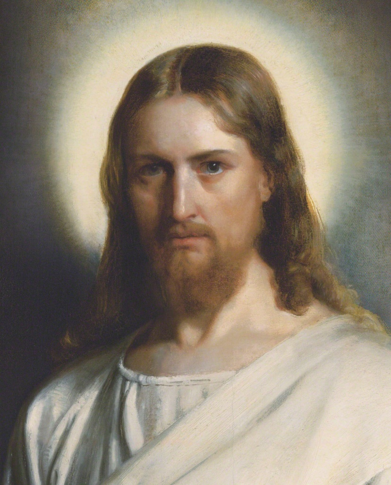
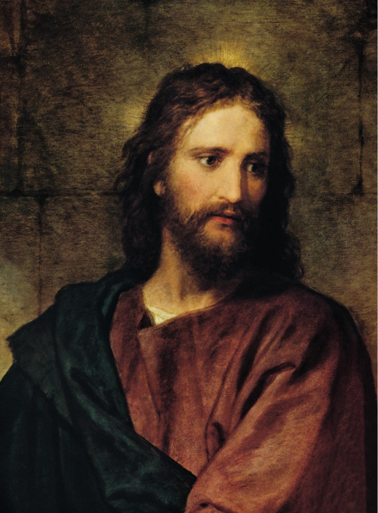
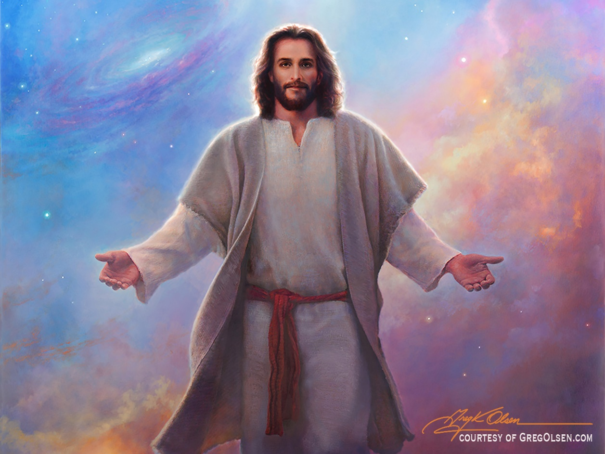
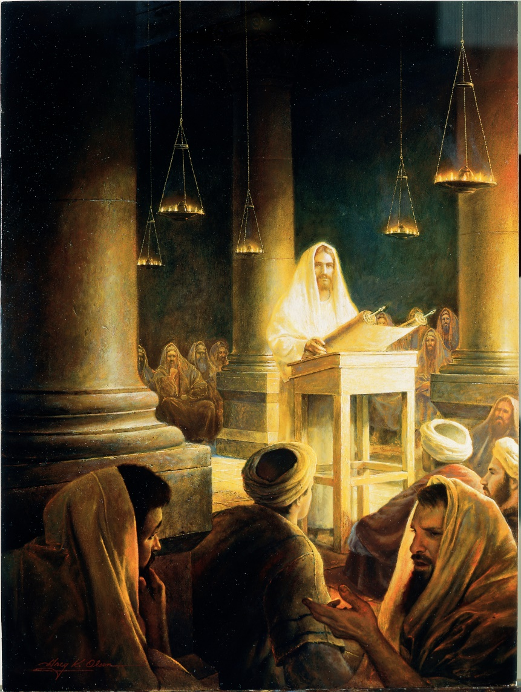

Christology connects incarnation, titles of Christ, sin, atonement, and salvation.
2 · How Is God One?
Councils and creeds define orthodoxy, Trinity, and the union of divinity and humanity.
3 · Who Has Authority?
Scripture, tradition, grace, sacraments, and reform generate distinct Christian families.
Guiding question: How do doctrines preserve mystery while also defining communal boundaries?
Section I
The Person & Work of Christ
Why must Jesus be fully human and fully divine—and how does his life, death, and resurrection save?
Christology
The Branch of Christian theology relating to the person, nature, and role of Jesus Christ
Divine and Human Nature
Hypostatic Union – Jesus is both fully divine and fully human
Incarnation - God became human in the person of Jesus Christ
Coverage Addition · Doctrine
Mary and the Logic of the Incarnation
Debates about Mary were also debates about who Jesus is
Ephesus · 431
Theotokos, "God-bearer," protects the claim that the one born of Mary is truly divine.
Chalcedon · 451
Jesus Christ is one person in two natures, fully divine and fully human, without confusion or separation.
Across Traditions
Catholics and Orthodox venerate Mary strongly; Protestants generally honor her biblical role with less devotional emphasis.
The Immaculate Conception concerns Mary's conception without original sin; it is not another name for Jesus's virgin conception.
Titles of Christ
Christ (G.) / Messiah (H)
King of Jews
Spiritual King
Royal Lineage
Savior
Spiritual savior (not the political savior Jews at the time were looking for)

he shall save his people from their sins (Matt. 1:21)
Titles of Christ
Christ (G.) / Messiah (H)
King of Jews
Spiritual King
Royal Lineage
Savior
Spiritual savior (not the political savior Jews at the time were looking for)
Savior of All
Gentile mission carries the Jesus movement beyond Jewish communal boundaries
Titles of Christ
Son of God
Central to Christianity is the divine sonship of Christ

"The angel said to her, 'The Holy Spirit will come upon you, and the power of the Most High will overshadow you. Therefore the child to be born will be holy; he will be called Son of God.” (Luke 1: 35 NRSVUE)
Titles of Christ
I AM
Christ proclaims He is the God of Abraham, Isaac, and Jacob

Jesus said unto them, Verily, verily, I say unto you, Before Abraham was, I am.
Sin: willful disobedience of God’s commandments
Sin cuts one off from the presence of God
Savior is needed to Justify man to God
Justify: to pardon and clear from guilt; to absolve from guilt and merited punishment
Work of Jesus - Soteriology
Jesus declares himself the looked for Messiah (Luke 4:18-21 & Mark 14:61-62)
Soteriology: branch of theology dealing with salvation especially as effected by Jesus Christ

Work of Jesus - Soteriology
Atonement – the reconciliation of God and humankind through Jesus Christ
Passion – (based on latinpassio suffering) the suffering and death of Jesus
Gethsemane (Luke 22:44)
Crucifixion
Resurrection
Christus Victor
Jesus’ death and resurrection triumphed over sin, death, and the devil.
Coverage Addition · Doctrine
How Does the Cross Save?
Atonement is one doctrine expressed through several overlapping models
Sacrifice / Satisfaction
Christ deals with sin and restores a broken relationship between humanity and God.
Christus Victor
Through death and resurrection, Christ defeats sin, death, and enslaving powers.
Moral Influence
Christ reveals divine love and calls people toward repentance and transformed life.
These are not necessarily competing theories; many Christians combine them.
Work of Jesus - Soteriology
A Jewish Jesus movement expands into a translocal, predominantly Gentile church
Apostles now commanded to teach Gentiles (Matt 28:19, compare Matt 10:5-6)
Atonement applies to all who believe, repent, and are baptized
Coverage Addition · Belief and Symbolism
Symbols of Christianity
Visual forms carry compact statements about Jesus, salvation, and Christian identity
Reserved image · Ichthus
Fish · Ichthus
An early symbol; the Greek letters became an acronym for “Jesus Christ, God’s Son, Savior.”
Reserved image · Cross forms
Cross and Crucifix
The empty cross stresses resurrection; the crucifix keeps Jesus’s suffering and sacrifice visible.
Reserved image · Chi-Rho / sign
Chi-Rho and the Sign
The Chi-Rho combines the first Greek letters of Christ; tracing the cross makes belief a bodily practice.
Pause & Reflect
Why did Christians insist that Jesus must be fully divine and fully human? What would be lost if either claim were removed?
Section II
Creeds, Trinity & Orthodoxy
How did debate become doctrine—and doctrine become a boundary of Christian belonging?
Orthodoxy Creation
325 - Convened first ecumenical council in Nicaea (Council of Nicaea)
Ecumenical: intended to represent the church across the Roman world
Proclaims the Nicene Creed (revised in 381)
Through means of the Creed is Orthodoxy proclaimed
Creeds define orthodoxy against alternatives increasingly labeled heresy or heterodox
With establishment of Christianity as Roman State Religion, heresy can be viewed as a crime against the state
Note – heresy is applied anachronistically to theological theories put forth during this time; not at all clear which theories would rise as orthodoxy
Some theories are still accepted by different branches of Christianity
Orthodoxy Creation
Even after Nicene Creed, important theories continue to arise
Additional councils were held to debate these theories; creedal language established as direct reaction to theories
Multiple councils needed to establish orthodoxy
Positions rejected by the councils were subsequently classified as heresy
Most heresies were alternative theories of Christology
Christian Heresy
Arianism – Arius taught that the Son was created and therefore not coeternal with the Father
Denies full divinity of Jesus Christ
Nicaea answered by affirming that the Son is of the same substance as the Father
Enjoyed a brief period of ascendancy before it was denounced as heresy
Christian Heresy
Arianism
Monophysite / Miaphysite controversy – How are Christ’s full divinity and full humanity united in one incarnate nature?
Christian Heresy
Arianism
Monophysitism
Docetism – Jesus Christ, as fully divine, did not have a real or natural body during his life on earth but only an apparent one
Associated with Gnosticism which held that matter was evil and the spirit good and claimed that salvation was attained only through esoteric knowledge (or gnosis)
Christian Heresy
Arianism
Monophysitism
Docetism
Monarchianism – Strongly maintained the essential unity of deity
Adoptionist - Christ, although of miraculous birth, was mere man until adopted by God
Patripassionist (Father suffers) – Holds that God the Father had come to earth and suffered and died under the appearance of the Son. Trinity is three manifestations of the single divine being
Nicene Creed
Read Creed; identify phrases that are in direct reaction to the above discussed “heresies”
Nicene Creed
Read Creed; identify phrases that are in direct reaction to the above discussed “heresies”
“begotten, not made, of one being with the father”
is in reaction to Arianism.
“was incarnate of the Holy Spirit and the Virgin Mary, and became truly human.”
is in reaction to Docetism.
Common Teachings
Niceno-Constantinopolitan Creed
Most influential of all Christian Statements of belief
accepted as authoritative by the Roman Catholic, Eastern Orthodox, Anglican, and major Protestant churches.
Gives authoritative creedal language to Trinitarian doctrine: the Father and Son are consubstantial
Fully developed in the Athanasian Creed
Doctrine of the Trinity
Neither the word “Trinity” nor the explicit doctrine appears in the New Testament
Early Christian texts describe Father, Son, and Spirit in diverse ways; later interpretations included Arian and Adoptionist viewsetc
Doctrine develops while maintaining Jewish monotheism and affirming the divinity of Son and Spirit
Jesus subordinate to the Father
Doctrine formulated during the 4th – 5th centuries and codified in the Creeds:
Maintain monotheism by stating three persons of same substance
Uses Greek philosophical terms to clarify claims rooted in scripture and worship
The Holy Trinity
God the Father
All powerful in heaven and on earth
There is nothing outside his power
A living being, not a force or a cosmic principle
God the Son
Created heaven and earth
Jesus is the crucified and exalted Lord, and the Son of God
Interpretations of Jesus - Gospels of Matthew, Mark, Luke, and John
The Holy Trinity
God the Holy Spirit
Called Lord, the term is also used for the Father and the Son
Foundational view of the Holy Spirit is sketched in a section of the Nicene creed
We believe in the Holy Spirit, the Lord, the giver of Life, who proceeds from the Father. With the Father and the Son he is worshiped and glorified. He has spoken through the prophets.
Powerful, uncontrollable, and unpredictable
Pause & Reflect
Are creeds primarily summaries of faith, boundaries of belonging, or instruments of power? Defend your answer with one example.
Section III
Scripture, Grace & Reformation
When Christians disagree about salvation, who has authority to interpret scripture and reform the church?
Coverage Addition · Sacred Writings
The New Testament
Twenty-seven writings from the first generations of the Christian movement
4 Gospels
Matthew, Mark, Luke, and John interpret the life, death, and resurrection of Jesus.
Acts
A narrative of the Spirit-guided expansion from Jerusalem toward Rome.
21 Letters
Pauline and general epistles address belief, worship, ethics, and community conflict.